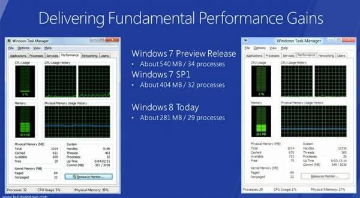

That works like once in a hundred times.
have worked all the times i’ve tried it
also, i have installed the preview now(erased the whole hard drive) and i really like it. obviously the metro interface works best with a touchscreen, but i didn’t have any problems with it with a mouse and keyboard
IIRC, it works, but you can only change the end of the partition.
Maxey here’s something for you: https://www.hanselman.com/blog/GuideToInstallingAndBootingWindows8DeveloperPreviewOffAVHDVirtualHardDisk.aspx
It didn’t work for me (problems with boot) but for most people it does. Try it out  It’s a virtual hard drive partition that you mount with the system and which is located in just one file on your disk. If you want to delete system after testing, you just modify your boot options and delete .vhd file. Simple and easy.
It’s a virtual hard drive partition that you mount with the system and which is located in just one file on your disk. If you want to delete system after testing, you just modify your boot options and delete .vhd file. Simple and easy.
eww no, don’t do that.
It will be slow, shit, sloppy and hackish.
Well’ since the purpose for installing any beta system is “hey look, it looks soo nice, ohhh and they changed thaat!”, you really shouldn’t complain As far as I can see and read forums people uninstall / erase this Developer Preview the moment after checking all most popular options and additions and don’t come back until release (as they said).
So, why not?
So, I said “fuck it” and installed it to a new partition.
Well, I can’t really judge it since it is clearly an early build only meant for developers. The big focus is on the new screen touch oriented interface and the “apps”. The classic desktop view is still there but the Start button only takes you to the new Windows Phone style interface, which needs a bit more work on it. When you open an “app” it opens in fullscreen mode and there are no window control option nor an exit button, you need to alt-tab between applications and the only way to close them is to go to the task manager, which has received an overhaul as well, and close the apps manually.
So, in a nutshell, this build is only for developers who want to make these new kind of “apps” and while it’s perfectly usable and quite stable, it’s clearly not even close to be finished yet.
It’s still Windows 7.5
Heh, that reminds me people laughing on Steve’s “New Full Screen” ability in Mac OS X Lion.
There won’t be any revolution for PC’s I guess, since new features are only new look and some management additions. With Windows 8 Microsoft is trying to catch the rest of boys in tablet / mobile chase. I’m really curious how it’s gonna work on such devices.
I installed it on a tablet PC I have for school and while I’ll admit the new interface is nice on a tablet, basically all the problems Maxey listed have made it less usable on a tablet than a normal computer. You can’t exit from apps without opening the keyboard back up and clicking the windows key, and screen orientation auto-detect no longer works. Also, the tablet buttons fail to respond despite windows update claiming to have installed the drivers.
So ya, until they make it less buggy and clean up some obvious interfacing issues, it’s actually less useful as a tablet than an actual desktop.
I set it up on VirtualBox running on Linux.
Installation went by very fast, but for example it never asked for regional settings, which I later had to set myself. The metro UI reminds me of the Windows Phone UI and I don’t think it is targetted for everyday use on a desktop PC. It was also confusing that I could launch IE from the metro UI and the “Desktop” and get two different interfaces. The other confusing thing was that it was not obvious how to close a Metro app, and what exactly is going on with the left end of the screen when you right-click with the mouse (some form of task switch replacement).
The metro UI can be completely disabled via changing the value of a registry key, though, and then the desktop behaves similarly to the one in Windows 7. I also like the classification of processes in the Task Manager, among other small changes.
The preview build (on the Virtualbox) is quite unstable. So far I got no BSODs but a few times I had to manually reset, because the O.S. go stuck during “log off” forever. One time, I chose log off, there was a few seconds of delay and then it returned me to the desktop screen as if I had just logged on.
Guize… it’s like… early alpha. what did you expect? 
Installed it over Win 7.
The whole “No controls for closing apps” thing annoyed me for a while… I was closing programs with task manager until I realized what Windows was doing. It supposedly puts the new Metro apps in “Suspension” when you’re not using them. Strange, but manageable. Other programs can be closed on the classic desktop with the X button.
What took me the longest to find was the Shutdown/Restart buttons which is on the Settings “charm” menu or whatever the hell it’s called.
I like it, a lot.
Yea… This looks bad.
What’s with the obsession of Apple and Microsoft to merge desktop and mobile OSs? It makes me cringe.
But at least Apple didn’t slap you in the face with their iOS-inspired crap in OSX… Windows 8 just has the mobile-diarrhea pour from your screen the moment you boot.
Yeah not much reason to buy Win8 for a desktop. The desktop aspect is just Win7.
Would be nice if they brought the performance improvements to Windows 7 through a Service Pack or something.

a bad thing is that it’s really tedious to get to the power menu to shut down the computer
Well, just installed Windows 8 in VirtualBox. Still working through it but I can’t really see myself, at the moment, installing it. I can’t justify the expense currently. Maybe something will come up, though…
(Posting this through Windows 8 at the moment.)
windows 8 will have a “classic” mode that will work the wsy that everyone wants. its already been stated by microsoft.
I’ll just go ahead and sneak this onto my non-technologically experienced friend’s computer, see what happens… I did this with Longhorn and 7 beta, but the windows 7 beta was so good microsoft kept it exactly the same for retail…
Yeah but the thing is that the “Classic mode” is actually an app called Desktop. It works differently too. But you can hit the Windows key for the Desktop, and Windows key again to go back to the apps list/new Start Menu screen. It has been a bit difficult to get used to.
I have had one “crash” so far. I think. After installing updates from WU and then rebooting the damn thing “Repaired” itself automatically (lol) and reverted to the original settings, which deleted every program I had installed (but saved all of my files). I am now creating my own restore points.